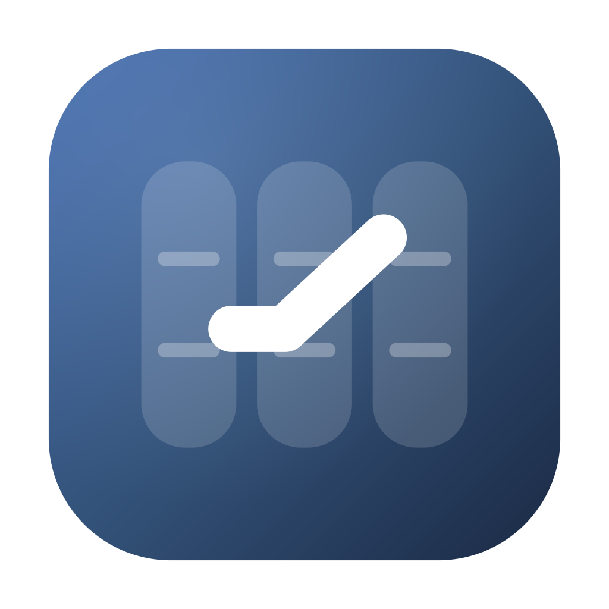
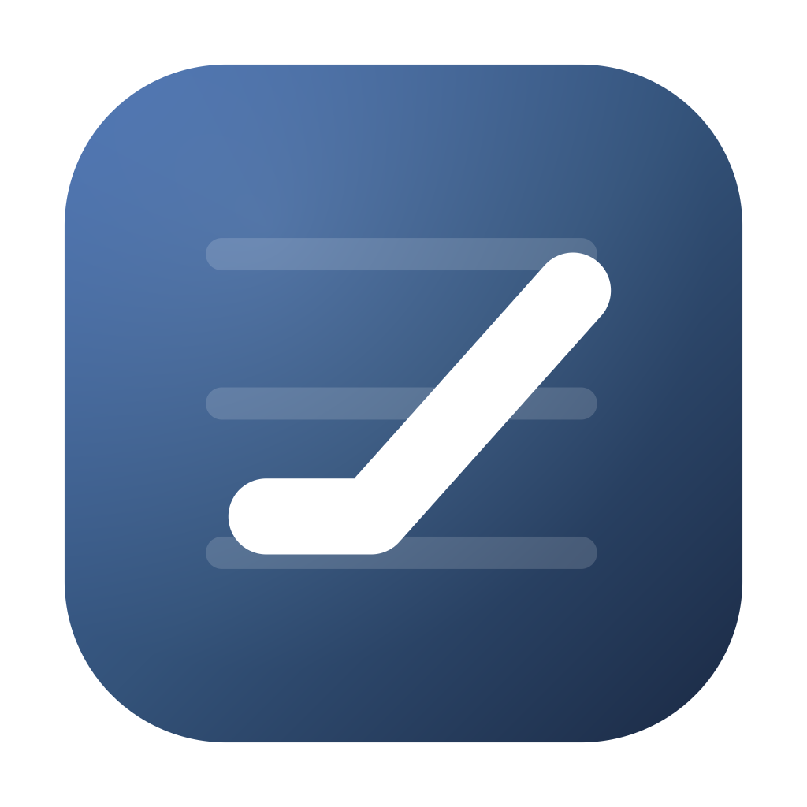
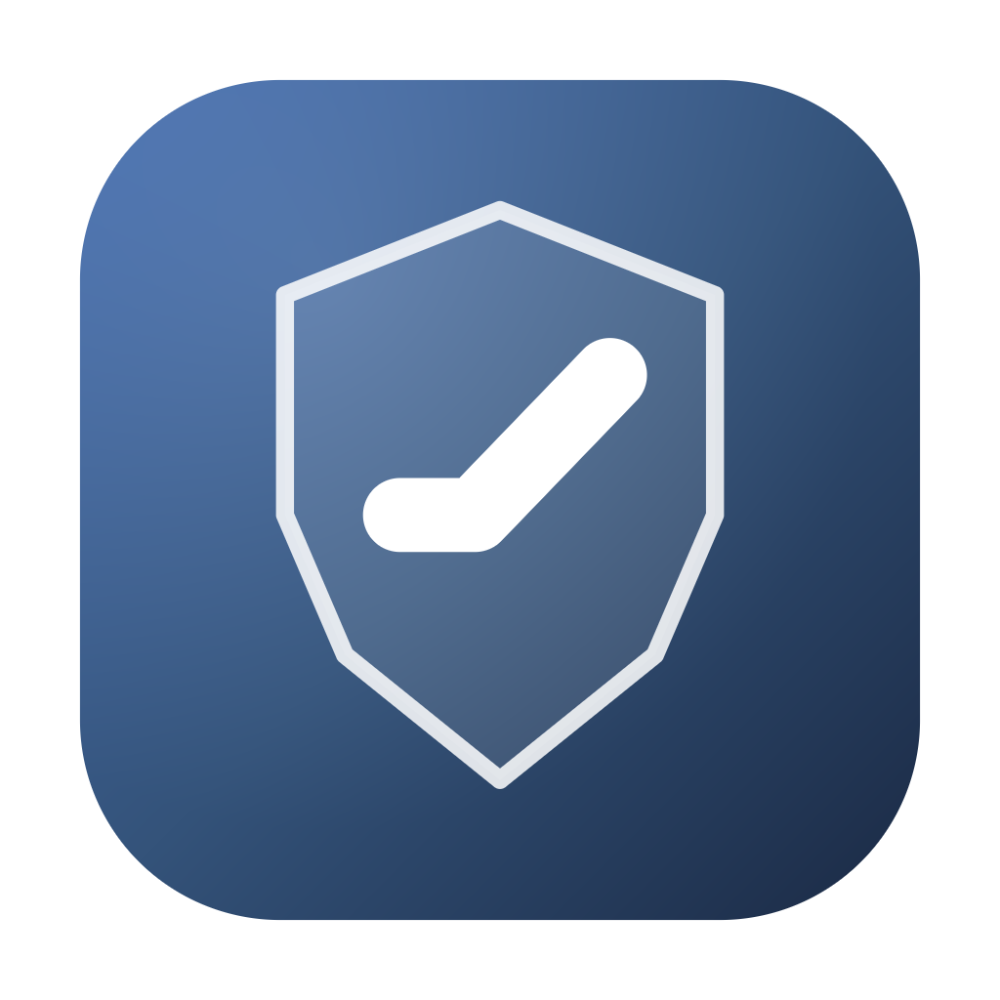
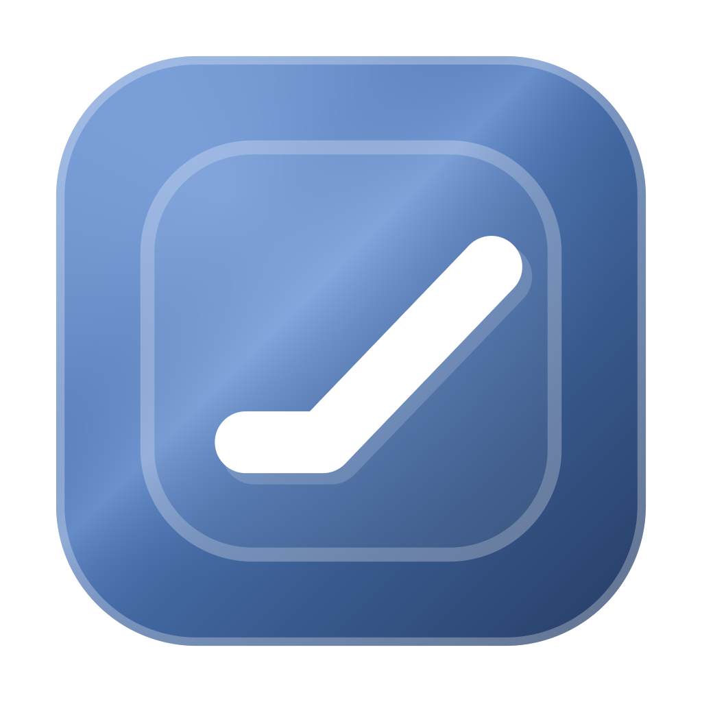
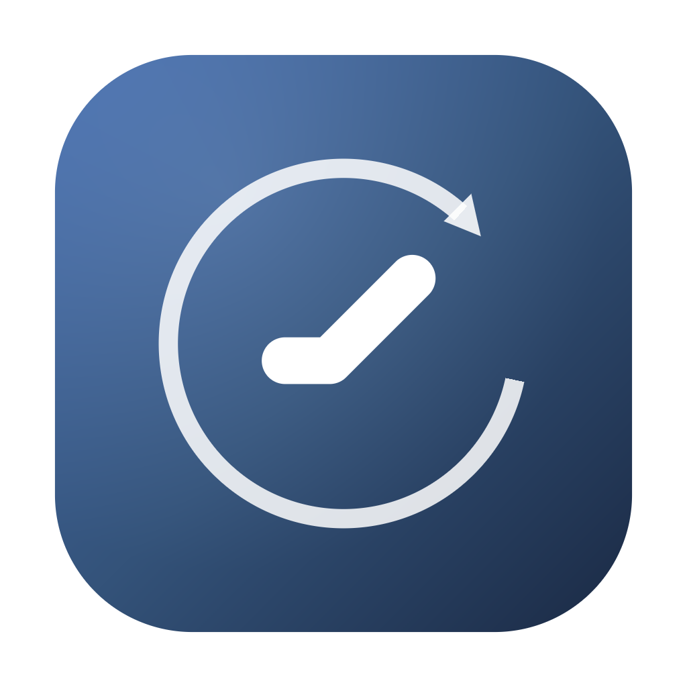
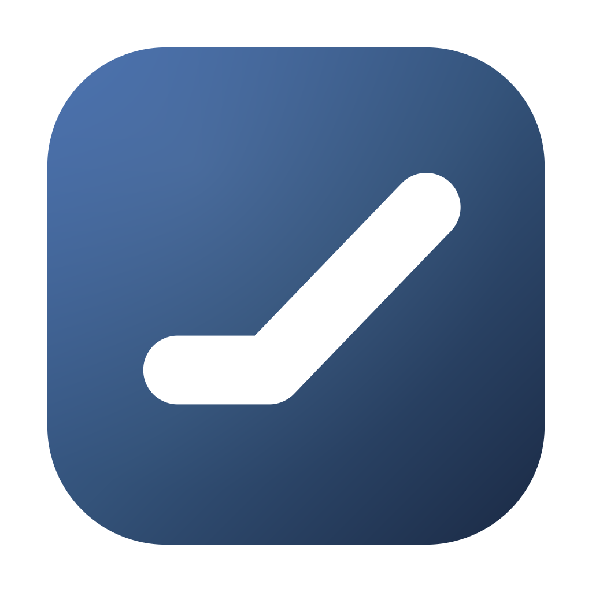

Adopted

02 · Board
Your tasks.
Three kanban lanes with cards and a completed check. The chosen direction — enlarged lanes and mark.

01 · Signature
Your tasks.
The current mark, refined: bolder checkmark, tighter lanes, cleaner gradient. Lowest-risk evolution — instant brand recognition.

03 · Vault
Your server. Your rules.
A shield with the mark inside. Self-hosted, private, yours — the strongest expression of data ownership.

04 · Glass
Liquid Glass.
A lit refractive lens with an embossed checkmark. Leans fully into the app's signature glassmorphism design system.

05 · Sync
Works offline. Syncs when it can.
The mark inside an orbit arrow. Captures the offline-first, cross-device sync that makes the server yours.

06 · Essential
Your tasks. Full stop.
One bold checkmark, no lanes. Maximum legibility at 16px launcher size — the minimalist option.
02 · Board — appearances (the adopted direction)
The dark variant mirrors the shipped iOS dark-icon behaviour: white mark, lowered field. This is the pair now shipped in the project.
01 · Signature — appearances
The dark variant mirrors the shipped iOS dark-icon and Android themed-icon behaviour: white mark, lowered field.